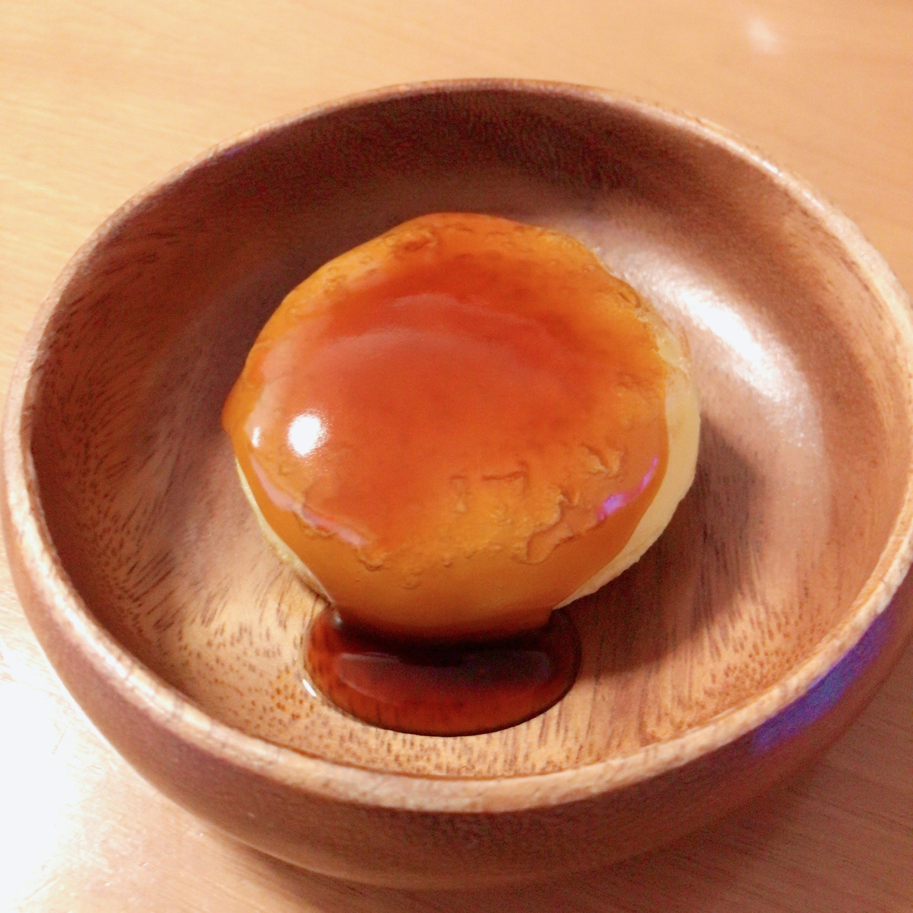

main
side
dessert
drink
いももち

材料(じゃがいも1個分)
じゃがいも大 1個
片栗粉 大さじ1
しょうゆ 25㏄
きび砂糖 40g
みりん 25㏄
水 50㏄
片栗粉 大さじ1.5
水 大さじ3
作り方
1. じゃがいもの皮を剥いて鍋に入れる。じゃがいも全体が水につかるくらいたっぷりの水を入れ、火にかける。
2. 沸騰して15分くらいしたら、箸で中まで火が通って柔らかくなっているか確認し、お湯を全部捨てる。
3. 再び火にかけて粉を吹かし、熱いうちにじゃがいもをつぶす。
4. 全体が滑らかになって粗熱が取れたら、片栗粉を加え混ぜる。
5. 粉っぽさがなくなったら丸く成形する。
6. 強火でいももちを焼く。多めの油で揚げ焼きにする。
7. しょうゆ、きび砂糖、みりん、水を煮立たせる。
8. 火を止めて、水で溶いた片栗粉を入れたら再び火にかけ、透き通るまで混ぜる。
9. 焼きあがったいももちに、お好みでみたらしだれをかけて完成。